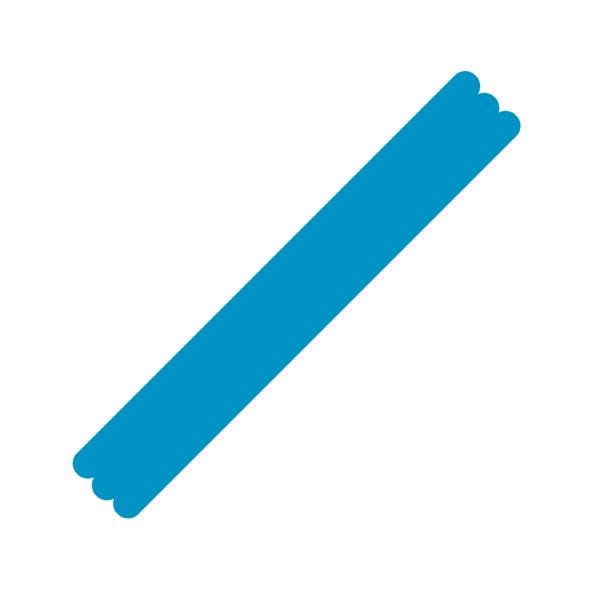

<div>
    <div layout="column"  class="height-100-vh">
        <!--setting button-->
        <div class="top-corner" ng-show="drawing.showDrawing">
            <md-fab-speed-dial md-open="isOpen" md-direction="{{speedDial.selectedDirection}}"
                               ng-class="speedDial.mode">
                <md-fab-trigger>
                    <md-button aria-label="menu" class="md-fab background-darkcyan">
                        
                    </md-button>
                </md-fab-trigger>

                <md-fab-actions>
                    <md-button class="md-fab md-raised md-mini background-ottanio border-3-darkblue">
                        
                    </md-button>
                    <md-button class="md-fab md-raised md-mini background-ottanio border-3-darkblue">
                        
                    </md-button>
                    <md-button class="md-fab md-raised md-mini background-ottanio border-3-darkblue">
                        
                    </md-button>
                    <md-button class="md-fab md-raised md-mini background-ottanio border-3-darkblue">
                        
                    </md-button>
                </md-fab-actions>
            </md-fab-speed-dial>
        </div>
        <!--end setting buttoon-->

        <!--header text-->
        <div layout="row" layout-align="start center" class="background-ottanio width-100" style="padding-left: 3%;">
            
            <div class="margin-bottom-30-px">
                <p class="canvas-location color-darkcyan" style=" font-size: xx-large">{{header.location | uppercase}}</p>
                <p class="canvas-floor color-cyan" style="font-size: medium; padding-left: 2%; float: right;">{{header.name}}</p>
            </div>
        </div>
        <!--end header text-->

        <!--canvas container-->
        <div id="canvas-container" layout="row"  layout-align="center start" class="parent-size background-ottanio">
            <canvas id="canvas-id" class="width-100"></canvas>
        </div>
        <!--end canvas container-->

        <!--menu container-->
        <div>
            <div id="open-menu-button" ng-click="toggleLeft()" class="margin-left--8-px cursor-pointer outline-none">
                
            </div>
            <section layout="row" flex>
                <md-sidenav id="menu-panel" class="md-sidenav-left" md-component-id="left" md-disable-backdrop md-whiteframe="4">
                    <md-toolbar class="background-darkcyan" layout="row" layout-align="center center">
                        <h1 class="md-toolbar-tools color-black">Menu</h1>
                        <div ng-click="toggleLeft()" class="margin-right-10-px cursor-pointer outline-none">
                            
                        </div>
                    </md-toolbar>
                    <md-content layout-margin class="margin-top-10">
                        <div layout="column" layout-align="center center">
                            <h1 class="font-iceberg color-ottanio">SMART STUDIO</h1>
                        </div>
                        <div layout="column" id="menu-container">
                            <md-list ng-controller="menuController">
                                <md-list-item ng-click="registry($$event)"><p>Aggiorna WeTag</p></md-list-item>
                                <md-list-item ng-click="showAnchorsTable()"><p>Tabella Ancore</p></md-list-item>
                                <md-list-item ng-click="floorUpdate()"><p>Tabella piani</p></md-list-item>
                                <md-list-item ng-click=""><p>Cerca WeTAG</p></md-list-item>
                                <md-list-item ng-click=""><p>Storico</p></md-list-item>
                                <md-list-item ng-click=""><p>Allarmi attivi</p></md-list-item>
                                <md-list-item ng-click="changePassword()"><p>Cambia password</p></md-list-item>
                                <md-list-item ng-click="logout()"><p>Logout</p></md-list-item>
                            </md-list>

                            <md-subheader class="background-lightcyan color-black margin-bottom-10-px margin-top-10-px">Azzioni immediate</md-subheader>

                            <div id="change-floor-container" layout="column" class="padding-10-px" layout-align="center center">
                                <md-input-container class="margin-bottom-0 margin-top-10">
                                    <label>Selezione piano</label>
                                    <md-select ng-model="floors.defaultFloor">
                                        <md-option ng-repeat="floor in floors.result" ng-value="floor.name">
                                            {{floor.name}}
                                        </md-option>
                                    </md-select>
                                </md-input-container>
                            </div>
                            <div id="change-grid-container" layout="column" class="padding-10-px">
                                <div flex="100" layout layout-align="center center">
                                    <md-subheader class="padding-0 width-100 zindex-0">Spaziatura griglia: <b>{{speedDial.gridSpacing}}</b><md-subheader>
                                </div>
                                <md-slider-container flex="100">
                                    <md-slider md-discrete ng-model="gridSpacing" min="10" max="1000" step="10" aria-label="speedDial.gridSpacing" class="md-primary"></md-slider>
                                </md-slider-container>
                            </div>
                            <div layout="row" layout-align="center center">
                                <div id="grid-on-off-container" layout="column" class="padding-10-px width-50" layout-align="center center">
                                    <div flex="100" layout layout-align="center center">
                                        <md-subheader class="padding-0" ng-show="grid.showGrid">Griglia: <b class="color-green">ON</b></md-subheader>
                                        <md-subheader class="padding-0" ng-show="!grid.showGrid">Griglia: <b class="color-red">OFF</b></md-subheader>
                                    </div>
                                    <md-switch class="md-primary margin-none margin-top-10-px" ng-change="switchChanged" md-no-ink aria-label="" ng-model="grid.showGrid">
                                    </md-switch>
                                </div>
                                <div id="fullscreen-on-off-container" layout="column" class="padding-10-px width-50" layout-align="center center">
                                    <div flex="100" layout layout-align="center center">
                                        <md-subheader class="padding-0">Fullscreen: <b class="color-red">OFF</b></md-subheader>
                                    </div>
                                    <md-switch class="md-primary margin-none margin-top-10-px" ng-change="switchChanged" md-no-ink aria-label="Switch No Ink" ng-model="speedDial.fullscreen">
                                    </md-switch>
                                </div>
                            </div>
                            <div layout="row" layout-align="center center">
                                <div id="anchors-on-off-container" layout="column" class="padding-10-px width-50" layout-align="center center">
                                    <div flex="100" layout layout-align="center center">
                                        <md-subheader class="padding-0" ng-show="anchors.showAnchors">Anchors: <b class="color-green">ON</b></md-subheader>
                                        <md-subheader class="padding-0" ng-show="!anchors.showAnchors">Anchors: <b class="color-red">OFF</b></md-subheader>
                                    </div>
                                    <md-switch class="md-primary margin-none margin-top-10-px" ng-change="switchChanged" md-no-ink aria-label="" ng-model="anchors.showAnchors">
                                    </md-switch>
                                </div>
                                <div id="cameras-on-off-container" layout="column" class="padding-10-px width-50" layout-align="center center">
                                    <div flex="100" layout layout-align="center center">
                                        <md-subheader class="padding-0" ng-show="cameras.showCameras">Cameras: <b class="color-green">ON</b></md-subheader>
                                        <md-subheader class="padding-0" ng-show="!cameras.showCameras">Cameras: <b class="color-red">OFF</b></md-subheader>
                                    </div>
                                    <md-switch class="md-primary margin-none margin-top-10-px" ng-change="switchChanged" md-no-ink aria-label="" ng-model="cameras.showCameras">
                                    </md-switch>
                                </div>
                            </div>
                            <div layout="row" layout-align="center center">
                                <!--<div id="radius-on-off-container" layout="column" class="padding-10-px width-50" layout-align="center center">-->
                                    <!--<div flex="100" layout layout-align="center center">-->
                                        <!--<md-subheader class="padding-0" ng-show="radius.showRadius">Radius: <b class="color-green">ON</b></md-subheader>-->
                                        <!--<md-subheader class="padding-0" ng-show="!anchors.showRadius">Radius: <b class="color-red">OFF</b></md-subheader>-->
                                    <!--</div>-->
                                    <!--<md-switch class="md-primary margin-none margin-top-10-px" ng-change="switchChanged" md-no-ink aria-label="" ng-model="radius.showRadius">-->
                                    <!--</md-switch>-->
                                <!--</div>-->
                                <div id="drawing-on-off-container" layout="column" class="padding-10-px width-100" layout-align="center center">
                                    <div flex="100" layout layout-align="center center">
                                        <md-subheader class="padding-0" ng-show="drawing.showDrawing">Modalita' disegna: <b class="color-green">ON</b></md-subheader>
                                        <md-subheader class="padding-0" ng-show="!drawing.showDrawing">Modalita' disegna: <b class="color-red">OFF</b></md-subheader>
                                    </div>
                                    <md-switch class="md-primary margin-none margin-top-10-px" ng-change="switchChanged" md-no-ink aria-label="" ng-model="drawing.showDrawing">
                                    </md-switch>
                                </div>
                            </div>
                        </div>
                    </md-content>
                </md-sidenav>
            </section>
        </div>
        <!--end menu container-->
    </div>
</div>